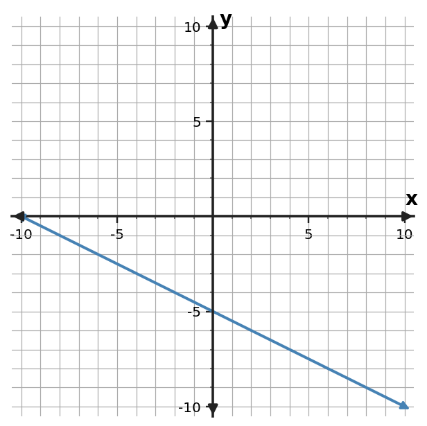

Learning Target
Students will analyze and compare linear relationships using multiple representations.
- I can construct comparison models for linear relationships shown in different forms.
- I can use slope and intercept information to interpret similarities and differences.
- I can critique conclusions about linear relationships using evidence from representations.
Vocabulary / Key Notation Preview
slope • intercept • rate • starting value • equivalent relationship
Sort the vocabulary. Write each vocabulary word in the column that best matches what you know right now. You may move a word later.
| Know for sure | Recognize | Don't know yet |
|---|---|---|
What's to Come
DO NOT SOLVE IT YET.
Circle anything familiar, underline symbols, labels, conditions, data, or features that seem important, and write short notes about what you think may matter later.
Two plans are graphed on the same axes. Focus on what the lines reveal, not on which one merely looks higher at one point.

(a) Which plan starts with the greater cost? (b) Which plan changes faster per hour? (c) Around what time do the costs become equal? (d) Explain why both starting value and rate matter when comparing the plans.
Let's Get Started
Skim the section. Record what catches your attention before you read closely.
| What I noticed | |
|---|---|
| What I predict | |
| What I wonder |
READ IN SHORT CHUNKS.
Annotate the words and visuals together. Underline evidence, circle or highlight bold vocabulary, label arrows, measurements, or important features, connect sentences to figures, and jot short questions or connections in the margins.
I can construct comparison models for linear relationships shown in different forms.
Comparing linear relationships is easiest when we translate different representations into common features. Whether a relationship is shown by an equation, table, graph, or context, two features are especially useful: constant rate of change and starting value.
A table may require calculating the rate from differences. An equation in $y=mx+b$ displays rate and starting value directly. A graph shows them through slope and the $y$-intercept. A context may describe them with phrases such as “per hour” and “starts with.” The representations differ, but the features can be organized in one comparison model.
A good comparison does not rely on whichever output happens to be largest in the displayed data. One relationship can start higher but grow more slowly, while another starts lower and eventually passes it. Rate and starting value explain why that can happen.
- What two common features can be extracted from equations, tables, graphs, and contexts to compare linear relationships?
- Why can the larger displayed output fail to identify the faster-growing relationship?
- How would you organize an equation and a table into a common comparison model?
| Relationship | Rate / slope | Starting value / intercept |
|---|---|---|
| A | ________ | ________ |
| B | ________ | ________ |
Use the same features even when A and B are shown in different forms.
Example 1: Equation Vs Table
Relationship A is $y=x+4$. Relationship B is shown in the table. Compare their rates of change and starting values.
| $x$ | B: $y$ |
|---|---|
| $0$ | $-1$ |
| $2$ | $3$ |
| $4$ | $7$ |
You Try It 1: Equation Vs Table
Relationship A is $y=2x-3$. Relationship B is shown in the table. Compare their rates of change and starting values.
| $x$ | B: $y$ |
|---|---|
| $0$ | $5$ |
| $2$ | $7$ |
| $4$ | $9$ |
Which comparison feature answers the question being asked: slope, intercept, or intersection?
Example 2: Table Vs Table
Compare the two linear relationships. Do not judge by the size of one displayed output; use rate and starting value.
| A: $x$ | A: $y$ |
|---|---|
| $0$ | $0$ |
| $2$ | $6$ |
| $4$ | $12$ |
| B: $x$ | B: $y$ |
|---|---|
| $0$ | $5$ |
| $3$ | $8$ |
| $6$ | $11$ |
You Try It 2: Table Vs Table
Compare the two linear relationships. Use rate and starting value rather than one displayed output.
| A: $x$ | A: $y$ |
|---|---|
| $0$ | $6$ |
| $2$ | $4$ |
| $4$ | $2$ |
| B: $x$ | B: $y$ |
|---|---|
| $0$ | $1$ |
| $3$ | $7$ |
| $6$ | $13$ |
I can use slope and intercept information to interpret similarities and differences.
Slope and intercept answer different comparison questions. The greater slope identifies the relationship that changes faster as the input increases. The greater intercept identifies the relationship that begins with the larger output when $x=0$.
Graph appearance can be misleading when axes use different scales. A line that looks steeper may not have the greater numerical slope if one graph compresses the vertical scale or stretches the horizontal scale. Compare numerical changes, not visual angle alone.
When two lines are compared on the same axes, their intersection is another useful feature. At the intersection, both relationships have the same output for the same input. Before that point one may be larger; after it the other may be larger, depending on their slopes and starting values.
- Which feature answers “changes faster”? Which feature answers “starts larger”?
- Why can visual steepness be misleading across graphs with different scales?
- What does an intersection mean in a comparison?
- Greater slope: changes faster as input increases.
- Greater intercept: has the larger output at input 0.
- Intersection: same output at the same input.
Example 3: Graph Vs Equation
Relationships A and B are the two graphed lines. Relationship C is $y=-x+3$. Order A, B, and C from greatest to least rate of change, and compare their starting values.

You Try It 3: Graph Vs Equation
The graphed line is Relationship A. Relationship C is $y=\frac{1}{2}x+4$. Which has the greater rate of change? Compare their starting values as well.

What common features can you extract before judging the relationships?
Example 4: Context Compare
Account A starts at 50 dollars and gains 8 dollars per week. Account B starts at 80 dollars and gains 5 dollars per week. Compare the rates and starting values. Which feature answers “changes faster,” and which answers “starts larger”?
You Try It 4: Context Compare
Plan A charges 10 dollars plus 4 dollars per visit. Plan B charges 20 dollars plus 2 dollars per visit. Compare the rates and starting values. Which feature answers “changes faster,” and which answers “starts larger”?
Example 5: Crossover Compare
For Relationship A, $y=3x+8$, and Relationship B, $y=2x+14$, find the input where their outputs are equal and identify which relationship has the greater rate of change.
You Try It 5: Crossover Compare
For Relationship A, $y=2x+20$, and Relationship B, $y=4x+4$, find the input where their outputs are equal and identify which relationship has the greater rate of change.
I can critique conclusions about linear relationships using evidence from representations.
A conclusion about linear relationships should be supported by representation evidence. Claims such as “A grows faster because its output is larger at $x=2$” confuse current output with rate. To judge growth rate, compare slopes or repeated changes.
Equal slopes do not automatically mean equal relationships. If the intercepts differ, the lines are parallel and remain a constant vertical distance apart. For two relationships to be identical, both their rates and their starting values must match.
Critiquing a claim means more than saying it is wrong. Identify which feature the claim uses, decide whether that feature actually answers the question, and replace the weak evidence with stronger evidence from slope, intercept, scale, or intersection behavior.
- Why is one output value not enough evidence for a claim about growth rate?
- If two lines have the same slope but different intercepts, are they the same relationship? Explain.
- What should a strong critique include after identifying a weak claim?
Claim $\rightarrow$ relevant feature $\rightarrow$ representation evidence $\rightarrow$ conclusion.
Example: “A grows faster” should be supported by slope or repeated-change evidence, not by one isolated output.
Example 6: Claim Critique
Two lines have the same slope but different $y$-intercepts. Casey says they represent the same relationship. Decide whether equal slopes are enough to make two linear relationships identical.
You Try It 6: Claim Critique
At $x=2$, Relationship A has the larger output, so Lee says A must always grow faster. Explain why one output value cannot establish which relationship grows faster.
Summary
- Translate different linear representations into common features before comparing.
- Slope, intercept, and intersection answer different comparison questions.
- Strong conclusions use relevant representation evidence rather than graph appearance or one isolated output.
Common Mistakes
| Mistake | Repair |
|---|---|
| Comparing only one output | Separate starting value from rate before deciding which relationship grows faster. |
| Trusting visual steepness across different scales | Calculate numerical slope from labeled axes. |
| Assuming equal slopes mean identical lines | Matching slope is not enough; the intercept must match too. |